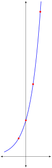
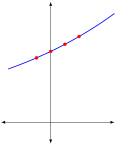
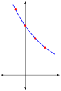

In the last chapter, we have looked at polynomials, where the terms are monomials like \(5\cdot x^2\text{.}\) In a monomial, the base is a variable \(x\text{,}\) and the coefficient and power are both constant numbers.
In this chapter, we will look at exponential functions like \(5\cdot 2^x\text{.}\) In this example, the exponent is a variable \(x\text{,}\) ad the coefficient and base are both constant numbers.
Section5.1Exponential Functions
To see what this looks like, it is helpful to try out a few examples.
Exploration5.1.
(a)
Let \(f(x) = 5\cdot 2^x\text{.}\) Compute \(f(-1)\text{,}\)\(f(0)\text{,}\)\(f(1)\text{,}\) and \(f(2)\text{.}\) Then, sketch the graph of \(y=5\cdot 2^x\text{.}\)
Solution.
Be very careful to follow the order of operations PEMDAS.
Graphing these points and connecting them gives the following picture

(b)
Let \(f(x) = 5\cdot 1.1^x\text{.}\) Compute \(f(-1)\text{,}\)\(f(0)\text{,}\)\(f(1)\text{,}\) and \(f(2)\text{.}\) Then, sketch the graph of \(y=5\cdot 1.1^x\)
Solution.
Be very careful to follow the order of operations PEMDAS.
Graphing these points and connecting them gives the following picture

(c)
Let \(f(x) = 5\cdot (0.75)^x\text{.}\) Compute \(f(-1)\text{,}\)\(f(0)\text{,}\)\(f(1)\text{,}\) and \(f(2)\text{.}\) Then, sketch the graph of \(y=5\cdot (0.75)^x\)
Solution.
Be very careful to follow the order of operations PEMDAS.
Graphing these points and connecting them gives the following picture

A picture is worth a thousand words. When you chose a different number for the coefficient \(a\) or base \(b\text{,}\) you get a different function. In the graphic below, use the sliders to change these two numbers, and get a sense of how fast the different functions grow or decay.
Figure5.1.
In this chapter, we will make extensive use of the Properties of Exponential Functions. If you get stuck duing a computation, it is a good idea to see if there is a property that you may find useful.
Exploration5.2.
Use the laws of exponents to rewrite the following functions in the form \(f(x) = a \cdot b^x\) where \(a,b\) are numbers.
(a)
Rewrite \(f(x) = 2^{-2x}\) as an exponential function in standard form.
Note that in the second to last step, we only had a base and a power. In the last step, we introduce a coefficient of \(1\text{,}\) which does not change the value of the expression.
We have shown that \(f(x)\) is equal to \(a\cdot b^x\) with \(a=1\) and \(b=0.25\text{.}\)
(b)
Rewrite \(f(x) = \left(\dfrac{1}{2}\right)^{2x+1}\) as an exponential function in standard form.
We have shown that \(f(t)\) is equal to \(a\cdot b^t\) with \(a=100\) and \(b=1.2155\text{.}\)
Section5.2Percents and Percent Change
You should already be familiar with the concept of percents. But because percents play an essential role in many topics in economics and business, we briefly review the definitions before moving on to our main applications.
The english word cent derives from the Latin word centum which means “hundred”. In other words, 20 percent literally means 20 per hundred or \(\dfrac{20}{100} = 0.2\)
Definition5.2.
Given any number \(A\text{,}\) the expression \(A\) percent (also written \(A\)%) refers to the decimal rate
\begin{equation*}
r = \dfrac{A}{100}
\end{equation*}
Given any numbers \(A,P\text{,}\) you can find \(A\)% of \(P\) by multiplying \(P\) by the decimal rate \(r = \frac{A}{100}\)
Example5.3.Basic Percentages.
\(15\)% is equal to the decimal \(r = \frac{15}{100} = 0.15\)
\(2\)% is equal to the decimal \(r = \frac{2}{100} = 0.02\)
\(0.12\)% is equal to the decimal \(r = \frac{0.12}{100} = 0.0012\)
\(15\)% of $\(40\) is equal to \(40 ( 0.15 )= 6\)
\(2\)% of $\(500\) is equal to \(500 (0.02) = 10\)
\(0.12\)% of $\(30\) is equal to \(30 (0.0012) = 0.036\)
Application5.4.Understanding percent change.
It is common to talk about an economic quanity by changing by a given percentage.
The term percent is an abbreviation of the expression per cent, which means per one hundred. In other words, \(25\)% is the same thing as \(25\) hundreds, or a decimal rate of \(\dfrac{25}{100}=0.25\text{.}\)
For example, \(25\)% of \(1000\text{,}\) is equal to \(1000\cdot 0.25 = 250\text{.}\)
Now, suppose that you say that \(1000\)increases by \(25\) percent. How much do you have after this increase?
If you are increasing the value by 25%, you keep the original \(1000\text{,}\) and add the new \(250\text{.}\) In other words, you have
To decrease a principal value of \(P\) by a decimal rate of \(r\text{,}\) compute
\begin{equation*}
P - P\cdot r = P(1-r)
\end{equation*}
Definition5.5.Percent Change.
Suppose that \(r\) is a decimal rate, and that \(P\) is any value. \(F\) is the result of increasing\(P\) by the rate \(r\) if \(F = P+rP\text{,}\) also written
\begin{equation*}
F = P\cdot (1+r)\text{.}
\end{equation*}
If \(F\) is the result of decreasing\(P\) by the rate of \(r\), we subtract \(rP\) instead, resulting in the formula
\begin{equation*}
F = P\cdot (1-r)
\end{equation*}
Exploration5.3.
Suppose you begin with $1000. How much do you have if the value is increased by 25%, and then decreased by 30%?
Solution.
25% corresponds to a decimal rate of \(r=\frac{25}{100} = 0.25\text{.}\) To increase $1000 by 25%, add $1000 to \(1000(0.25)\)
\begin{equation*}
1 + r = \frac{234}{300} = 0.78
\end{equation*}
\begin{equation*}
1 + r = 0.78
\end{equation*}
\begin{equation*}
r = -0.22
\end{equation*}
The value has decreased by 22%
Exploration5.5.
Let \(P\) be any principal value. For each of the following final values, find out whether the principal has been increased or decreased, and the find the corresponding decimal rate and percent of this change.
(a)
By what percent has \(P\) been changed, if you end up with a final value of \(1.1 P\text{?}\)
Solution.
We want to rewrite \(1.1 P\) in the form \(P(1+r)\) for some number \(r\text{.}\) Here we have
In other words, the principal \(P\) has been increased by a decimal rate of \(2\text{,}\) which corresponds to an increased of \(200 \)%.
We have focused above on understanding and applying the definition of percent change \(F = P(1+r)\text{,}\) since this will be important to understand compound interest below. However, there are also a variety of other equivalent formulas that can be used to find percent change.
Corollary5.6.
The percent change from \(P\) to \(F\) is given by \(r = \dfrac{F}{P}-1\text{,}\) or equivalently by \(r = \dfrac{F-P}{P}\)
Proof.
To get both equations, solve \(F = P(1+r)\) for \(r\text{.}\) For the first,
\begin{align*}
F \amp = P(1+r) \\
\dfrac{F}{P} \amp = 1 + r\\
\dfrac{F}{P} - 1 \amp = r
\end{align*}
For the second,
\begin{align*}
F \amp = P(1+r) \\
F \amp = P+ Pr \\
F - P \amp = Pr \\
\dfrac{F - P}{P} \amp = r
\end{align*}
Section5.3Compound Interest and Depreciation
The power mathematics comes from the fact that the same basic tools apply in a surprisingly wide variety of contexts. For example, percent changes occur in many contexts including
loan payments,
inflation, and
the change in value of physical objects.
In finance, your hope is that the value of your investments will increase over time. In other contexts (manufacturing, purchasing a car, etc.), you understand that the value of your investment will decrease over time. The process of an object losing value over time is called depreciation.
To describe the results of inflation at a fixed percent (say, 4%) over several years, or to describe an object that repeatedly decreases in value by a fixed percent over several years, we will need a formula for repeated percent changes.
Application5.7.Repeated percent changes.
Inflation refers to the process of prices increasing over time. Often, we talk about prices increasing at the same rate per year, over a period of several years.
For example, suppose that prices are increasing at \(5\)% per year, which corresponds to a decimal rate \(r = \frac{5}{100}=0.05\text{.}\) Suppose also that a certain product costs \(100\)$ in the first year.
One year later, the cost is the original amount \(P=100\) plus a change of \(rP = 0.05\cdot 100 = 5\) dollars. In other words, the value one year later is
How much will the value be after two years? In the second year, the value of \(105\) increases a second time, also by 5%, or a rate of \(r=0.05\text{.}\) That means
We can find the value after three years in the same way. We will take the value from the second year, and increase it by a rate of \(r=0.05\text{.}\) Furthermore, that increase is equivalent to multiplying the value from the second year by another coefficient of \(1+0.05=1.05\text{.}\)
This line of reasoning works for any positive period of time \(t\text{,}\) giving us a formula for the value of an object with original value \(100\text{,}\) where the price has been increased 5% for \(t\) years.
Suppose that an original principal value of \(P\) is repeatedly changed by a fixed decimal rate of \(r\)one time per year. The value after \(t\) years will be given by
\begin{equation*}
V(t) = P \cdot \Big( 1 + r \Big)^t\text{.}
\end{equation*}
If the value is being increased, use a posive value for the rate \(r\text{.}\) If the value is being decreased, use a negative value for the rate \(r\text{.}\)
Accountants often keep track of the present value of a larged investment or fixed asset. The term depreciation refers to a decrease in the value of the asset. You can find a more complete introduction to the concept on Investopedia at https://www.investopedia.com/terms/d/depreciation.asp.
Application5.9.Accounting and depreciation.
Value can be measured in many ways. For example, suppose that you purchase a car and that you somehow know that it will last 200,000 miles, and that you will drive 20,000 miles each year. By how much has the value value of the car decreased after 3 years?
The "correct" answer to this question depends on a surprising number of factors.
If you are measuring value as "percent of lifetime miles remaining", there would be \(160,000\) of the total \(200,000\) miles remaining, so the value of the car would be \(\frac{160,000}{200,000} = 0.8\text{,}\) or 80%, of its original value.
After four years, the value of the car would be \(\frac{140,000}{200,000} = 0.7\text{,}\) or 70%, of its original value. And after five years, the value of the car would be \(\frac{120,000}{200,000} = 0.6\text{,}\) or 60%, of its original value.
In this case, the value is decreasing at a constant amount per year. This is often called straight line depreciation, since connecting the dots yields a linear equation
\begin{equation*}
\text{(value at year t)} = \text{(starting value)} - \text{(amount of value used per year)} t
\end{equation*}
On the other hand, cars are known to break more and more frequently as they get older. If you knew which repairs would be required each year, you could make a table of values telling you the value of the vechicle at each point in time (or at each number of miles). For each year, you would take its value from the previous year, decrease the value based on the reduced mileage of the car, and subtract the expected maintenence from that point of time.
This way of tracking the decrease, or depreciation, is in some ways more accurate than straightline depreciation but is much more complicated to compute.
From a different perspective, it is clear that new cars have many features that older cars do not. To oversimplify things, suppose that a new car always has 10% more features than an older car. If you are going to buy a car that is one year older, you will want the price to decrease enough to make up for that loss in additional features.
Said another way, many investments will lose a fixed percent of their value every year. This is called declining balance depreciation.
Suppose that the value of a different car decreases by 25% each year. After one year, 75% of the value is retained. After 2 years, 75% of the original 75% is retained, resulting in \(0.75\cdot 0.75= 0.5625\text{,}\) or 56.25% of the value remains. After 3 years, the value that remains is \(0.75\cdot 0.75\cdot 0.75= 0.421875\text{,}\) or 42.19% of the original value.
More generally, the value after \(t\) years is defined by the exponential equation
\begin{equation*}
\text{(value in year t)} = \text{(starting value)}\cdot \text{(percent of value retained after a year)}^t
\end{equation*}
Deciding when to use each depreciation scheme is an important question in Accounting, and is well beyond the scope of this course. As a result, in this course, we will restrict our attention to declining balance depreciation, and we will usually state explicitly that a fixed percentage of value is lost each year.
Exploration5.6.
Your company has recently invested in a $500,000 CNC machine for a high throughput production line. After some research, you have decided that each year, the machine will lose 20% of its remaining value.
(a)
What is the net value of the asset after one year? After two years?
Find a formula for the future value of the asset as a function of the number of years \(t\) in the future. Sketch a graph of this function.
Solution.
We are repeatedly reducing the principal (original value) \(P=500,000\) by 20%, or a decimal rate of \(r= -0.2\text{.}\) Using Proposition 5.8, we see that the value of the investment at time \(t\) is given by
The process of repeatedly increasing a value by a fixed percent is called compounding. If you increase the value every year, you are said to be compounding yearly. If you increase the value 12 times per year, you are said to be compounding monthly.
The term interest refers to a very specfic kind of compounding. As Investopedia puts it, “Interest is the monetary charge for borrowing money—generally expressed as a percentage, such as an annual percentage rate (APR).” (https://www.investopedia.com/terms/i/interest.asp)
In compound interest, you pay interest on both the principal and on the interest accrued so far.
The term compounding refers to the action of computing the new interest, and adding it back into the principal.
The simplest example (which we have already mentioned above) happens when the For example, suppose that you borrow $100, at an interest rate of 3%, and that the interest is compounded (or added to the principal value) \(one time\) each year.
Table5.11.Interest Compounded Yearly
Years Elapsed
Previous Debt
New interest
New Debt
\(1\)
\(100\)
\(100\cdot 0.03=3\)
\(100+3=103\)
\(2\)
\(100\)
\(100\cdot 0.03=3.09\)
\(103+3.09=106.09\)
Often, interest will be compounded multiple times each year. Suppose, for example, that you borrow money at 3% interest, compounded twice each year.
Does this mean that you need to pay 3% interest after 6 months, and a second 3% interest after the next 6 months? Absolutely not - that would be like paying 6% interest over the year!
Instead, the convention is to divide the state annual percentage rate evenly among the number of compoundings per year. For example, if you borrow at 3% compounded twice per year, then the interest per compounding is \(\frac{3 \%}{2\text{ compoundings}} = 1.5\) % per compounding, or a decimal rate of 0.015 per compounding.
Table5.12.Interest Compounded Biannualy
Years Elapsed
Previous Debt
New interest
New Debt
\(0.5\)
\(100\)
\(100\cdot 0.015=1.5\)
\(100+1.5 = 101.5\)
\(1.0\)
\(101.5\)
\(101.5\cdot 0.015=1.5225\)
\(101.5+1.5225=103.0225\)
\(1.5\)
\(103.0225\)
\(103.0225\cdot 0.015=1.5453375 \)
\(103.0225+1.5453375=104.5678375\)
\(2.0\)
\(104.5678375\)
\(104.5678375\cdot 0.015=1.5685175625\)
\(104.5678375+1.5685175625= 106.136355062 \)
Most banking instruments are compounded monthly, or more frequently. That means that you would compound \(m=12\) times each year, with an interest per compounding of \(\dfrac{3\%}{12\text{ compoundings}}=0.25\) % per compounding, or a decimal rate of \(r = 0.0025\text{.}\)
We could compute this using a table, but you can see that this rapidly becomes unworkable. Instead, we can modfiy the for repeatedly changing the principal by a fixed value.
Definition5.13.
Suppose that a principal \(P\) is invested at an annual decimal rate \(r\text{,}\) and compounded \(m\) times each year. The value of the investment after \(t\) years is equal to
\begin{equation*}
F(t) = P \cdot \left(1 + \frac{r}{m}\right)^{m\cdot t}
\end{equation*}
The rate \(r\) is called the annual percentage rate, and the value at year \(t\) is called the future value of the investment at time \(t\text{.}\)
The interest earned is the difference between the principle and the future value.
To remember the formula, remember that you are increasing the principal by the decimal rate \(\frac{r}{m}\) each compounding. Because you are computing \(m\) times per year, after \(t\) years, you will have repeated this process \(m\cdot t\) times.
Exploration5.7.
Suppose that you have invested $1000 at an APR of 3%, compounded monthly.
(a)
Find the future value of this instrument as a function of the number years \(t\text{.}\)
Solution.
Use the compound interest formula with \(P=1000\text{,}\)\(r=0.03\text{,}\)\(m=12\text{,}\) and time represented by the variable \(t\text{.}\)
In other words, this is equivalent to increasing the value by an actual, or effective, rate of \(3.041\dots\) percent each year.
Definition5.14.
The effective APR of an investment is the rate \(r_{eff}\) such that
\begin{equation*}
P \cdot \Big(1 + \frac{r}{m}\Big)^{m\cdot t} = P \cdot \Big(1 + r_{eff}\Big)^{t}
\end{equation*}
Application5.15.Another way to find Effective APR.
Given the definition of effective APR, it is generally easist to find the effective APR by using the laws of exponents to simplify the compound interest formula with your given values.
This approach may, however, make it a bit more difficult to see the actual meaning of \(r_{eff}\text{.}\) To make this meaning more clear, we will introduce another more numerical way to compute \(r_{eff}\text{.}\)
Recall that the effective APR of an investment tells you the actual percent by which the value grows each year. That means that you can also find the effective APR by computing and comparing the value of the investment at any conscutive two years.
For example, in the the exercise above, we found that the future value was given by
\begin{equation*}
F(t) = P \cdot \left(1 + \frac{r}{m}\right)^{m\cdot t}
\end{equation*}
Using the principal \(P=100\text{,}\) decimal rate \(r=0.2\text{,}\) and frequency of compounding \(m=4\text{,}\) since there are four quarters in each year.
How much should you start with to get $1000 after 5 years?
Solution.
Again, start by writing down the formula for Definition 5.13
\begin{equation*}
F(t) = P \cdot \left(1 + \frac{r}{m}\right)^{m\cdot t}\text{.}
\end{equation*}
Next, fill in the values given. In this problem, we want the future value\(F=1000\) at the future time\(t=5\text{.}\) We are also given \(r=0.2\) and \(m=4\text{.}\)
\begin{equation*}
1000 = P \cdot \left(1 + \frac{0.2}{4}\right)^{4\cdot 5}\text{.}
\end{equation*}
Note that now the unknown variable is the starting (or present) value \(P\text{.}\)
Simplifying the base and exponents gives
\begin{equation*}
1000 = P \cdot \left(1.05\right)^{20}
\end{equation*}
Using a calculator, we obtain
\begin{equation*}
1000 = P \cdot 2.6532
\end{equation*}
Solve for \(P\) by dividing both sides by \(2.6532\)
\begin{equation*}
P = \dfrac{1000}{2.632} = 376.89
\end{equation*}
You must start with a present value \(P=376.89\) to achieve the desired future value in 5 years.
(c)
Rewrite \(F(t)\) in the form \(a\cdot b^t\text{.}\) What is the effective APR?
Solution.
Again, start by writing down the formula for Definition 5.13
\begin{equation*}
F(t) = P \cdot \left(1 + \frac{r}{m}\right)^{m\cdot t}\text{.}
\end{equation*}
Next, fill in the values given.
\begin{equation*}
F(t) = P \cdot \left(1 + \frac{0.2}{4}\right)^{4\cdot t}\text{.}
\end{equation*}
No other values are given in this part, so we now simplify.
\begin{equation*}
F(t) = P \cdot \left(1.05\right)^{4\cdot t}
\end{equation*}
Using the law of algebra \(a^{rs} = (a^r)^s\text{,}\) we get
\begin{align*}
F(t) = \amp P \cdot \left(1.05^4\right)^{t}\\
= \amp P \cdot \left(1.2155\dots \right)^{t} \\
= \amp P \cdot \left(1 + 0.2155\dots \right)^{t}
\end{align*}
Recall Proposition 5.8. This reminds us that the expression above coressponds to the process of repeatedly increasing the principal \(P\) by \(21.55\dots\)% each year.
In other words, the effective APR is \(21.55\dots\)%.
Checkpoint5.16.
How much must you invest at 3% interest, compounded monthly, to have 10,000 after 5 years?
Solution.
Again, start by writing down the formula for Definition 5.13
\begin{equation*}
F(t) = P \cdot \left(1 + \frac{r}{m}\right)^{m\cdot t}\text{.}
\end{equation*}
Next, fill in the values given.
\begin{equation*}
10000 = P \cdot \left(1 + \frac{0.03}{12}\right)^{12\cdot 5}\text{.}
\end{equation*}
We want to solve for the unknown variable \(P\text{.}\) We could simplify the expression using a calculator, or we could just use the fact that \(\left(1 + \frac{0.03}{12}\right)^{12\cdot 5}\) is a constant number and divide both sides by it to get.
\begin{equation*}
P = \dfrac{10,000}{\left(1 + \frac{0.03}{12}\right)^{12\cdot 5}} = 8,609\text{.}
\end{equation*}
A picture is worth a thousand words. The present value will grow more fast or slow based on the value of the principal \(P\text{,}\) APR \(r\text{,}\) and frequency of compounding \(m\text{.}\) In the graphic below, use the sliders to change these two numbers, and get a sense of how fast each of these parameters impact the growth of a balance compounded continuously.
Instructions.
Figure5.17.Compound interest as a function of time
The Natural Exponential for Calculus.
Application5.18.Compounding Faster and Faster.
In the interactive graphic above, note that once you increase the frequency \(m\) above about 20, the graph of compound interest appears to stop changing.
Actually, if you compute things out with a calculator, you will see that there are differences when you change \(m\text{,}\) but those changes get smaller and smaller as you increase \(m\text{.}\)
In other words, as you compound more and more frequently at an APR of 100%, the effective APR settles down to a specific number (171%).
Said another way, as you compound more and more frequently at 100%, the base settles down on a specific number \(2.71\dots\text{.}\) Mathematicians use the letter \(e\) to denote this number.
Surprisingly, there is a very simple equation for what happens when you compound continuously.
Theorem5.19.
If you compound continuously at a rate \(r\text{,}\) the value after \(t\) years is given by the function
where \(e\) is a number that is approximately \(2.71\dots\text{.}\)
Surprisingly, exponential functions with base \(e\) play a very important role in calculus. Because of this, we call it the natural base to use for the exponential function. More precisely, we make the following definition.
Definition5.20.
The function \(y = e^{x}\) is called the natural exponential function. Sometimes, we denote this function by writing